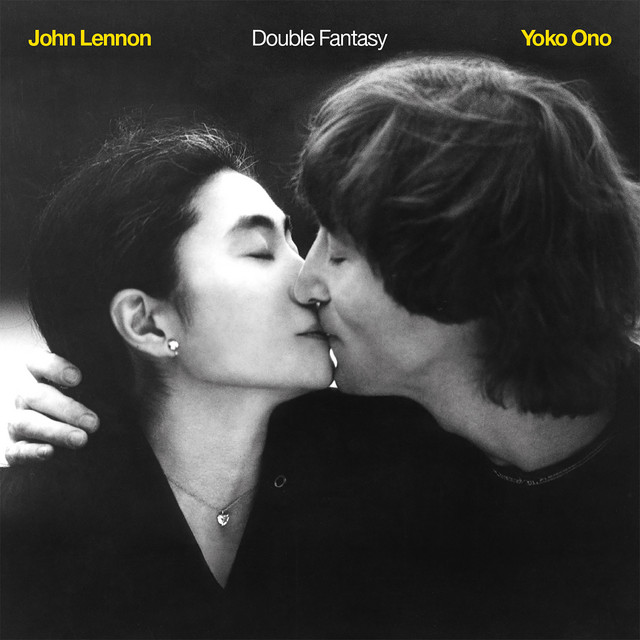

Artistas y Bandas del Mes
- The Beatles
- The Rolling Stones
- Pink Floyd
- John Lennon
- Michael Jackson
- Elton John
- Queen
- Nirvana
- Avicii
- Coldplay
¡Bienvenido a nuestra tienda en línea de DVD´S! Aquí encontrarás una selección de los mejores álbumes de tus artistas y grupos favoritos. Desde clásicos atemporales hasta los últimos lanzamientos, tenemos algo para todos los gustos musicales. Explora nuestra colección y descubre la magia de la música en formato físico y digital. Cada CD contiene información detallada, incluyendo una breve descripción del artista o grupo, la imagen de la portada, el audio del éxito principal y, por supuesto, el precio.
The Beatles, más conocidos en el mundo hispano como Los Beatles, fue una banda británica de rock formada en Liverpool durante los años 1960. Son considerados uno de los iconos culturales más grandes del siglo XX.

The Rolling Stones, más conocido en el mundo hispanohablante como los Rolling Stones o, simplemente, los Rolling, o los Stones, es un grupo británico de rock originario de Londres.
Pink Floyd es una banda de rock británica, fundada en Londres en 1965. Considerada un icono cultural del siglo XX y una de las bandas más influyentes, exitosas y aclamadas en la historia de la música popular, obtuvo gran popularidad dentro del circuito underground gracias a su música psicodélica y espacial, que con el paso del tiempo evolucionó hacia el rock progresivo y el rock sinfónico adquiriendo la popularidad con la que hoy son recordados.

John Winston Ono Lennon (nacido como John Winston Lennon; Liverpool, 9 de octubre de 1940-Nueva York, 8 de diciembre de 1980) fue un artista, músico, cantautor, poeta, multinstrumentista, actor, activista, compositor, productor, escritor y pacifista británico, conocido por ser fundador, vocalista, compositor y guitarrista rítmico de la banda de rock The Beatles y considerado uno de los artistas más influyentes del siglo XX. Su asociación como compositor con Paul McCartney sigue siendo la más exitosa de la música popular y una de las más celebradas de la historia.
Jackson era un laureado cantante, bailarín, productor, compositor, actor y hasta ícono de la moda para sus admiradores. La estrella de la música ganó fama mundial como artista en solitario con éxitos como Thriller, Billie Jean y Bad.

Elton Hercules John es un cantante, compositor y músico de rock y pop británico. Con una carrera de más de sesenta años, ha lanzado treinta y dos álbumes de estudio y ha vendido más de trescientos millones de copias en todo el mundo, siendo uno de los artistas musicales más exitosos de la historia.
Queen es una banda británica de rock formada en 1970 en Londres, integrada originalmente por el cantante y pianista Freddie Mercury, el guitarrista Brian May, el baterista Roger Taylor y el bajista John Deacon (el cual llegaría un año después al grupo para completar la formación clásica). Sus primeros trabajos estuvieron influenciados por el rock progresivo y el hard rock, pero la banda se aventuró gradualmente en trabajos más convencionales y amigables con la radio, incorporando más estilos como el arena rock y el pop rock.
Nirvana fue una banda de rock estadounidense formada en Aberdeen, en 1987. Fundada por el cantante y guitarrista Kurt Cobain y el bajista Krist Novoselic, la banda pasó por una sucesión de bateristas, sobre todo Chad Channing, y luego reclutó a Dave Grohl en 1990.

Tim Bergling, conocido por su nombre artístico Avicii, fue un DJ, remezclador, compositor y productor discográfico sueco. A los 16 años comenzó a publicar sus remixes en foros de música electrónica, lo que lo llevó a su primer contrato discográfico. Alcanzó la fama en 2011 con su sencillo «Levels»
Coldplay es una banda británica de rock alternativo formada en Londres en 1997. Está integrada por Chris Martin, Jonny Buckland, Guy Berryman, Will Champion y Phil Harvey.